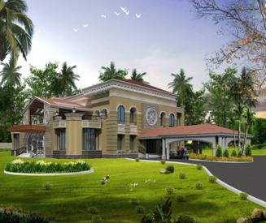
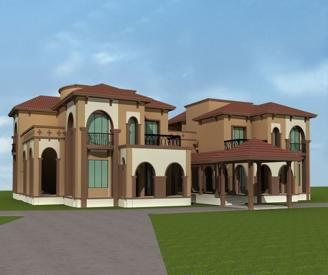
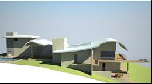

Case study | Buildings
Commercial and residential structures from analysis to drawings.

Building systems with clear documentation and site support.
Vaishali has worked across malls, residential towers, villas, and mixed-use structures, combining structural analysis with drawing coordination, proof-checking responses, reinforcement detailing, and site clarifications. This part of her practice shaped her ability to communicate engineering decisions to architects, reviewers, contractors, and owners.
Representative work includes Empire Mall Prozone, Meghmayur Mall, Amby Valley Villas, residential towers, and group villa developments. The design work included PT slabs, flat slabs, foundations, columns, framing systems, RCC walls, and coordinated structural drawing sets.
- Performed analysis and design for PT slabs, flat slabs, foundations, columns, walls, and framing.
- Reviewed reinforcement and post-tensioning drawings against design intent and site conditions.
- Responded to proof-checking comments, drawing revisions, RFIs, and construction coordination needs.
- Built practical experience across both premium residential work and larger commercial programs.


